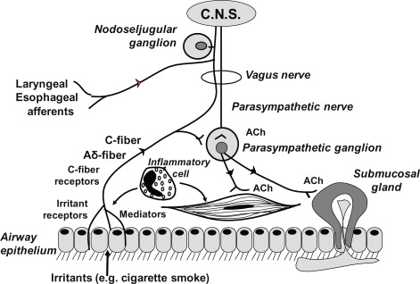

- Pulmonary Mechanoreceptors (2)
- Pulmonary irritant receptors (PIR)
- A.k.a. – rapidly adaptive receptors on Aδ fibers
- Detect frequency of breathing
- Respond to smoke, smog, and particulates -> cause coughing
- Unmyelinated C fibers
- Sensory neurons located in lungs
- Stimulated by noxious substances such as capsaicin
- Produces initial apnea -> rapid, shallow breathing
